TYPOGRAPHY
We establish Inter as our primary typeface across all weights, ensuring optimal legibility and strict visual consistency across products.
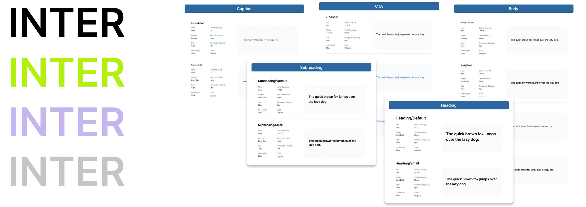
Design System
We establish Inter as our primary typeface across all weights, ensuring optimal legibility and strict visual consistency across products.

Centered elevation levels designed to establish clear content hierarchy without lateral shifts, maintaining focus on primary tasks.
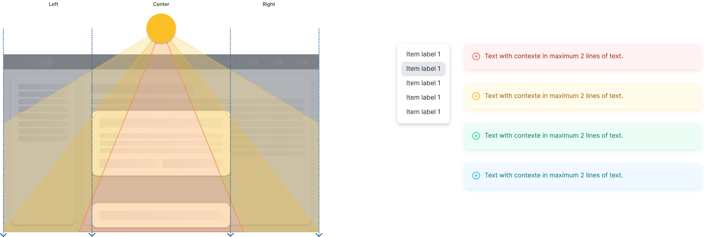
A purposeful color system divided into core semantic palettes, high-contrast states, and feedback tokens to guide user interaction.
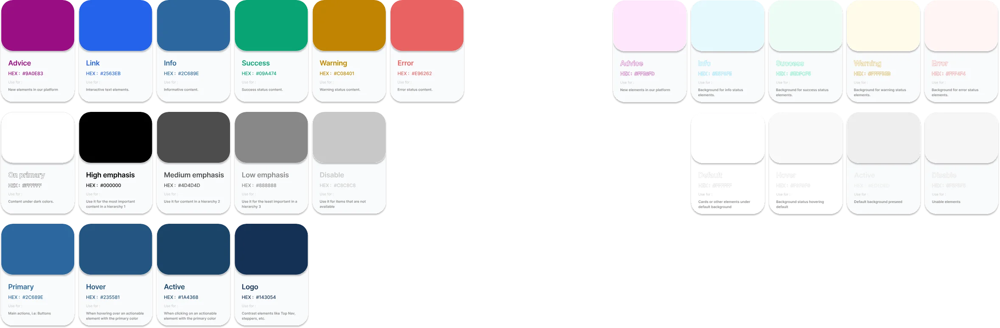
Flexible grid structures adapted to desktop and mobile breakpoints, establishing reliable alignment for responsive design.
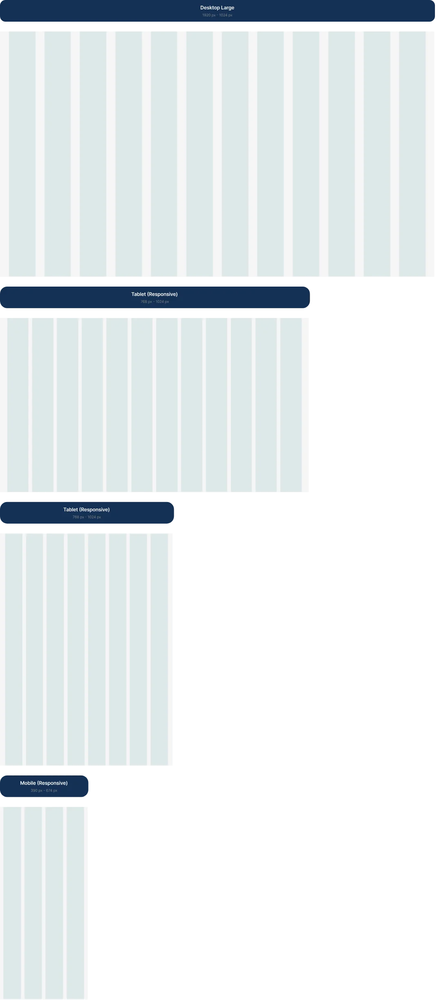
An 8px spacing foundation governing proportional margins and consistent gutters between elements across every screen.
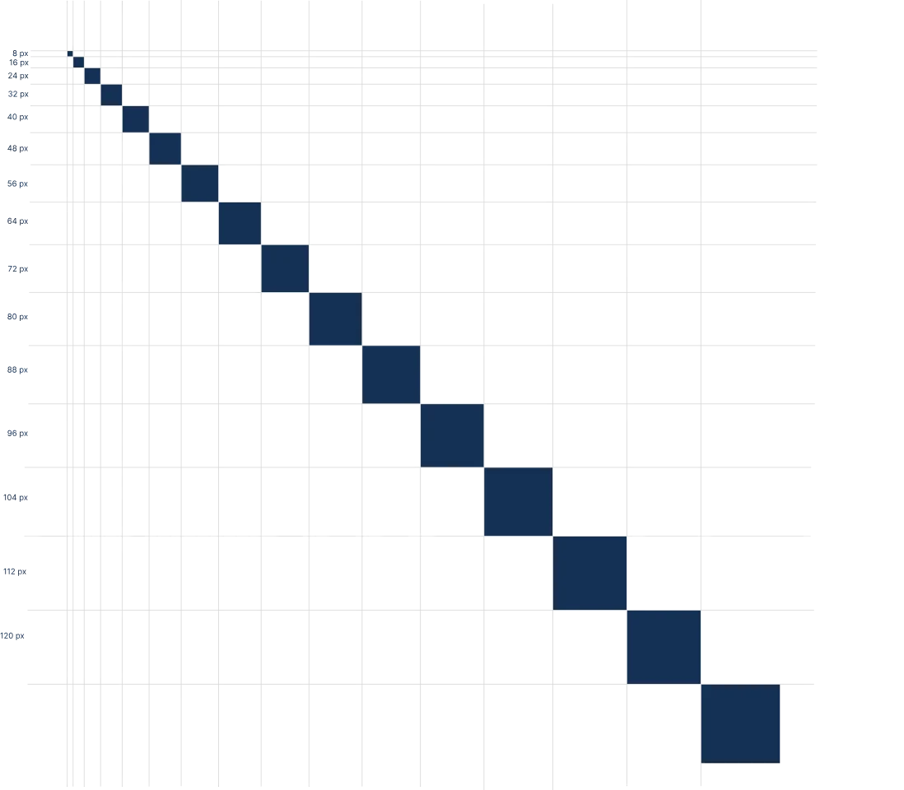
A standardized icon library built on an 8px grid system, ensuring visual balance and clear functional meaning.
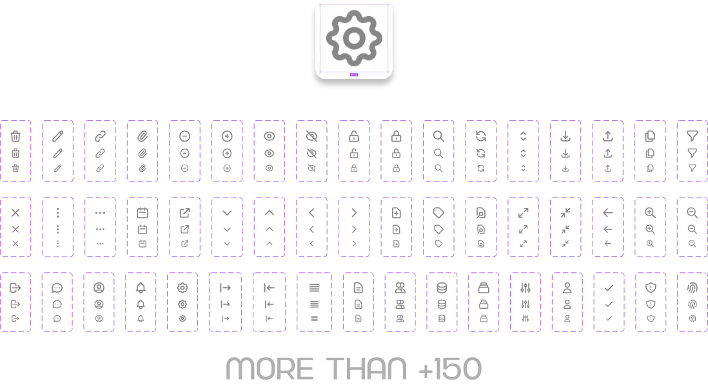
Standardized circular components designed to represent users cleanly within consistent sizing parameters.
Interactive elements utilized to filter content, highlight specific attributes, or let users trigger quick actions with a single click.
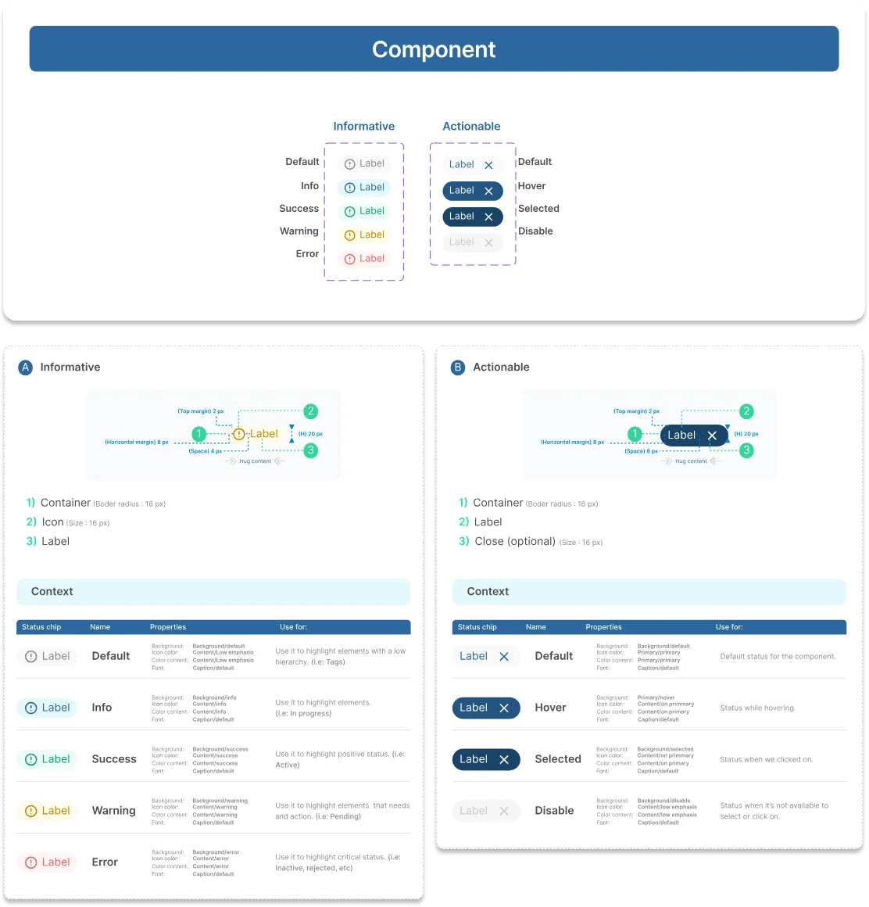
Navigation controls that allow users to easily switch between distinct views or related content categories within the same screen.
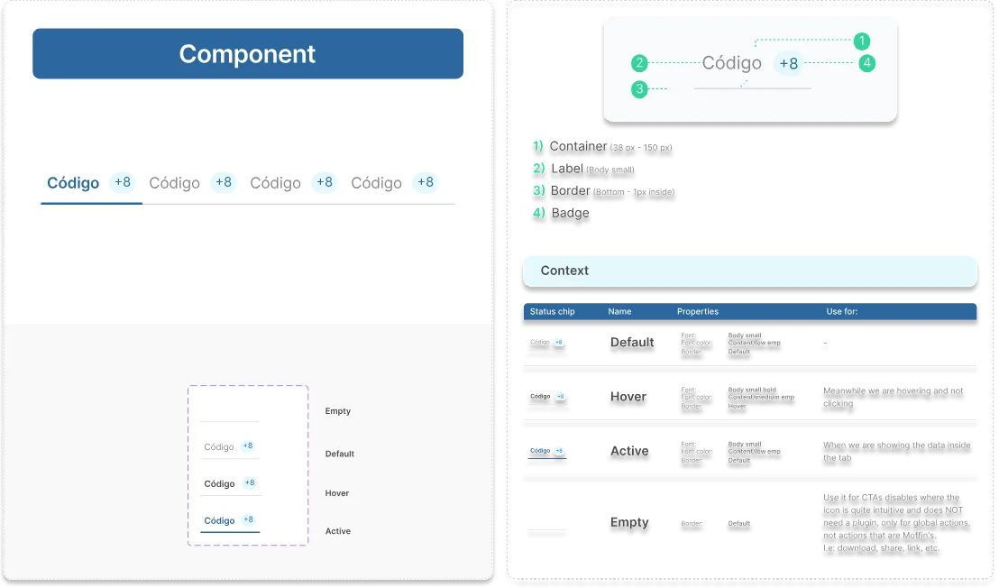
Primary, secondary, and tertiary action triggers structured hierarchically to guide user intent through clear visual weight.
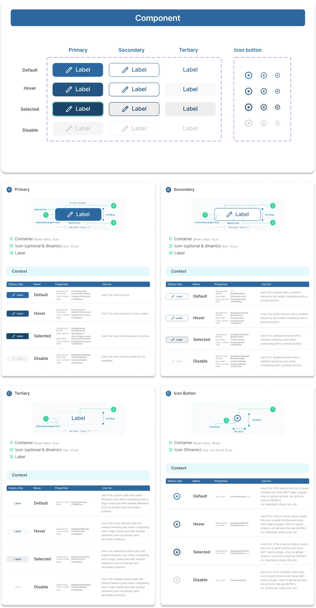
Persistent navigation structure designed to organize core platform sections, nested modules, and account controls efficiently.
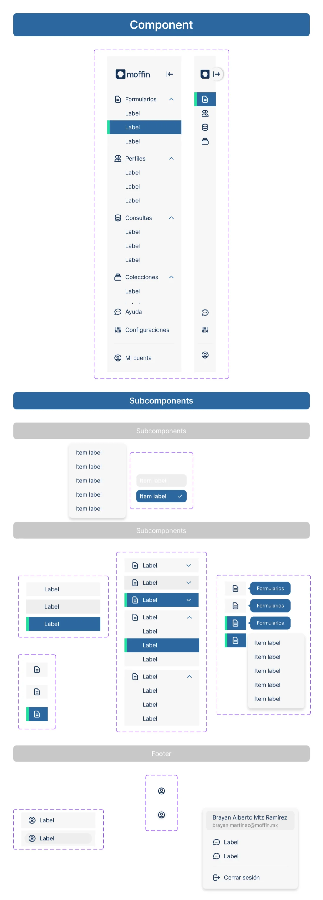
Checkboxes and radios designed for binary choices or mutually exclusive options within forms and lists.
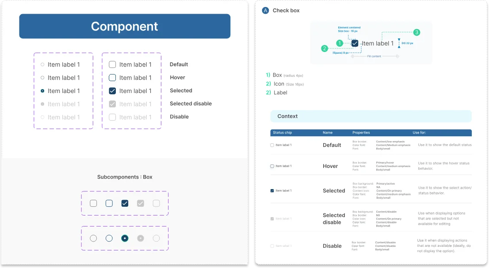
Transient feedback messages that display short, non-disruptive notifications regarding the status of a system action.
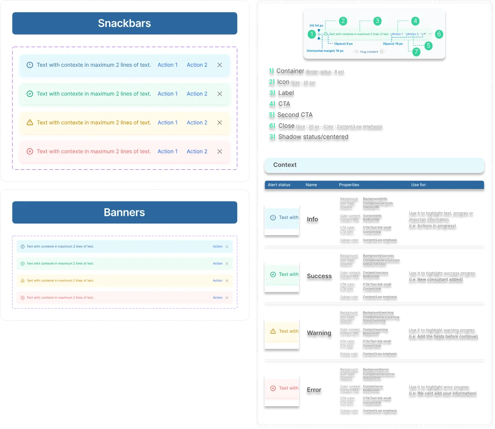
Interactive input areas structured to capture user data, numbers, or passwords securely and intuitively.
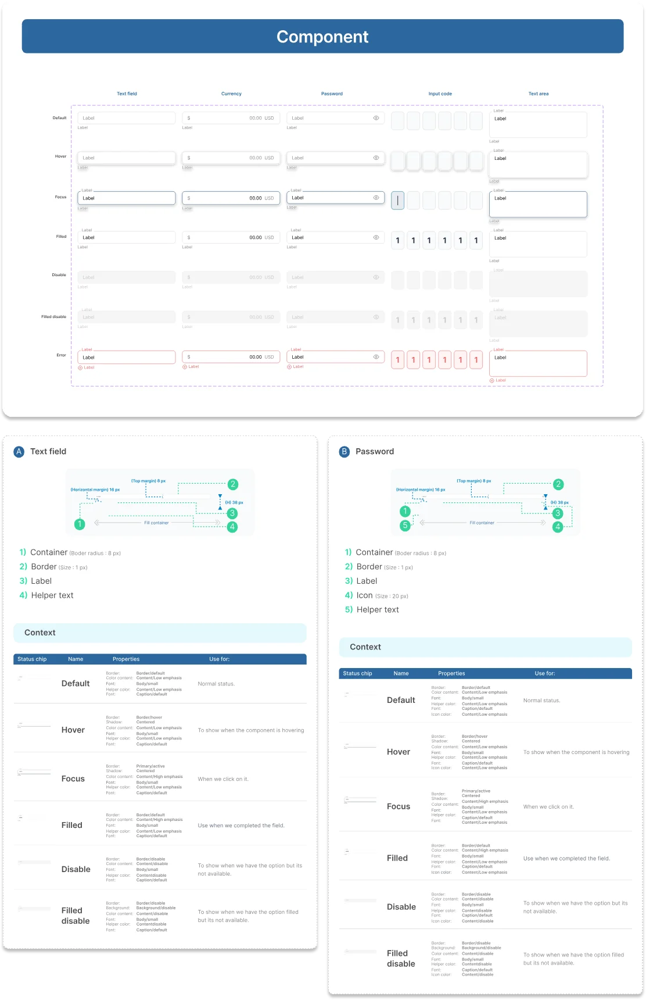
Dropdown components that allow users to choose one option from a predefined list of choices, optimizing form layouts.
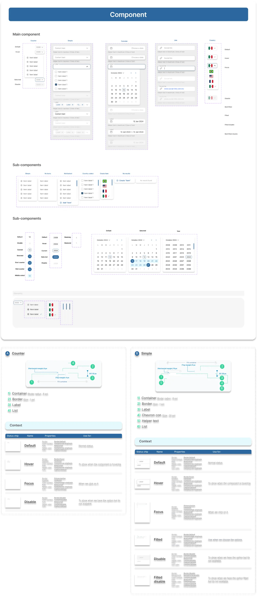
50+
A robust system scaling up to hundreds of enterprise-grade components, data tables, and specialized UI patterns.
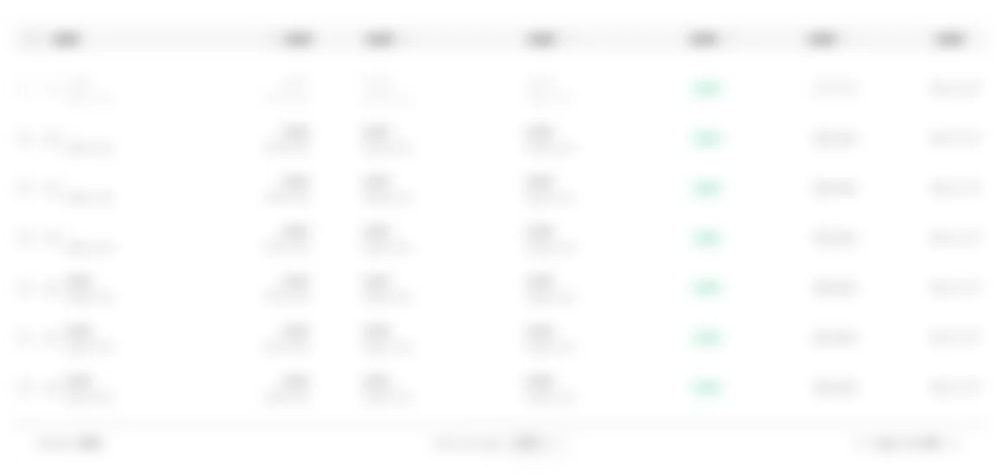